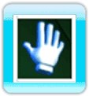
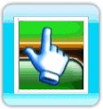
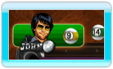
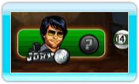
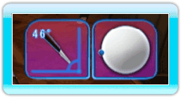
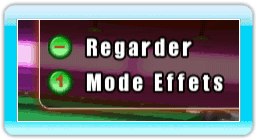
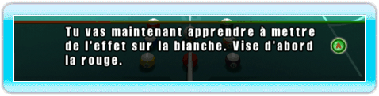
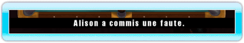
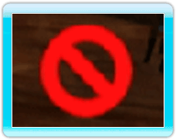

12 |
Interface de jeu |
 |
Curseur La petite main représente le curseur dans les différents menus.   Une main complète vous indique que vous n’êtes pas sur une icône que vous pouvez sélectionner. Une main avec l’index tendu vous indique que vous pouvez sélectionner quelque chose à l’écran. En mode visée lors d'une partie, le curseur main est remplacé par une croix. La croix indique simplement la position de votre Wii Remote à l’écran, ce qui vous aide à viser en maintenant le bouton A enfoncé. Barre d’état du personnage La barre d’état du personnage comporte la photo et le nom du personnage actif.  Dans le jeu de la 9, elle comporte également l’image de la prochaine bille à jouer. Dans les autres jeux de billard, elle comporte la couleur de la bille (billard anglais) ou le type de bille (billard américain) que doit jouer le joueur actif. Si la couleur ou le type de bille n’a pas encore été déterminé, un point d’interrogation apparaîtra à la place. A droite de la barre d’état du personnage se trouvent toutes les billes rentrées par le joueur actif à ce stade du jeu. La barre d’état des effets La barre d’état des effets permet de voir les modifications apportées à l’angle de la queue du joueur actif ou aux effets sur la blanche. Cette barre apparaît en haut à droite de l’écran. Boîte d’aide Dans le coin en haut à droite de l’écran, la boîte d’aide indique les commandes qui vous sont accessibles. Ces commandes changent en fonction de l’écran sur lequel vous vous trouvez. Boîte de dialogue En bas de l’écran, la boîte de dialogue donne des instructions utiles lors des tutoriels et des défis. Barre d’information La barre d’information vous donne des renseignements sur le jeu comme les annonces de fautes. C’est aussi là qu’apparaissent les sous-titres des dialogues des personnages. Icône “impossible de passer” Cette icône apparaît si vous essayez de passer une animation qu’il est impossible de passer. |
 |
 |
 |